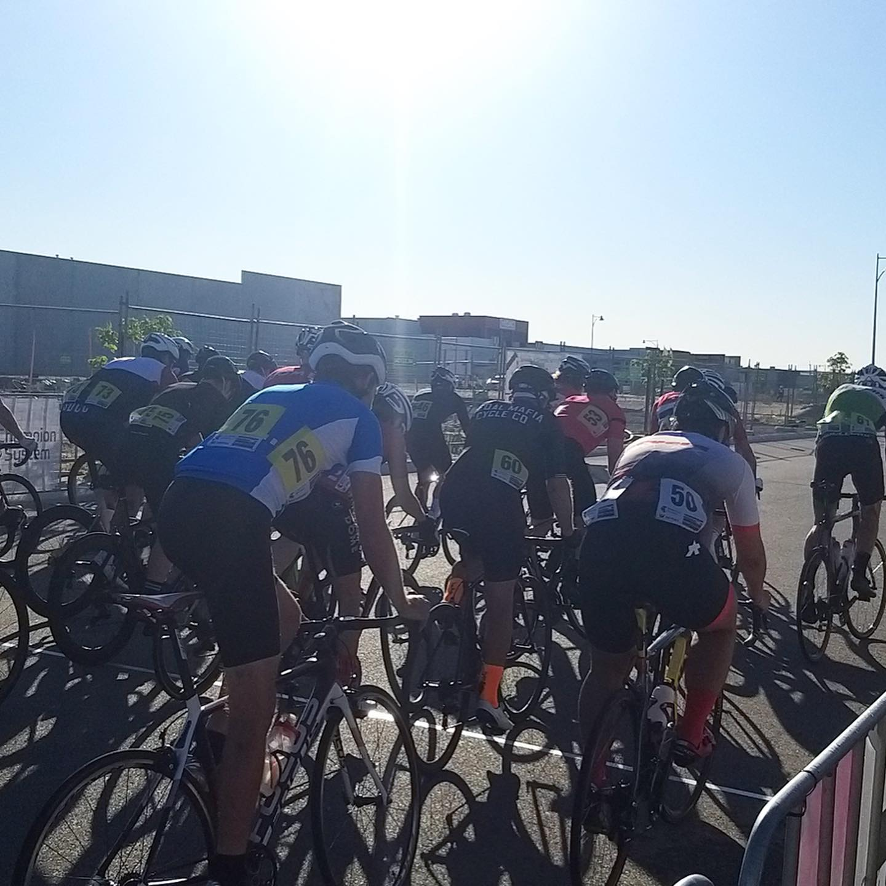
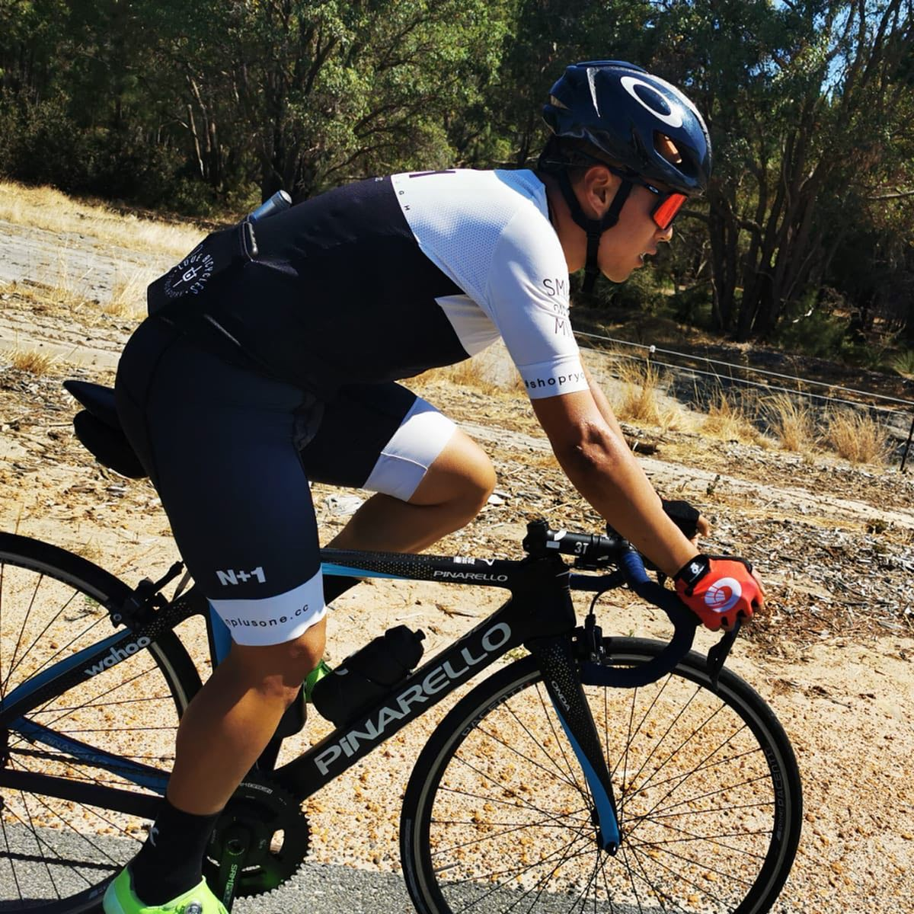
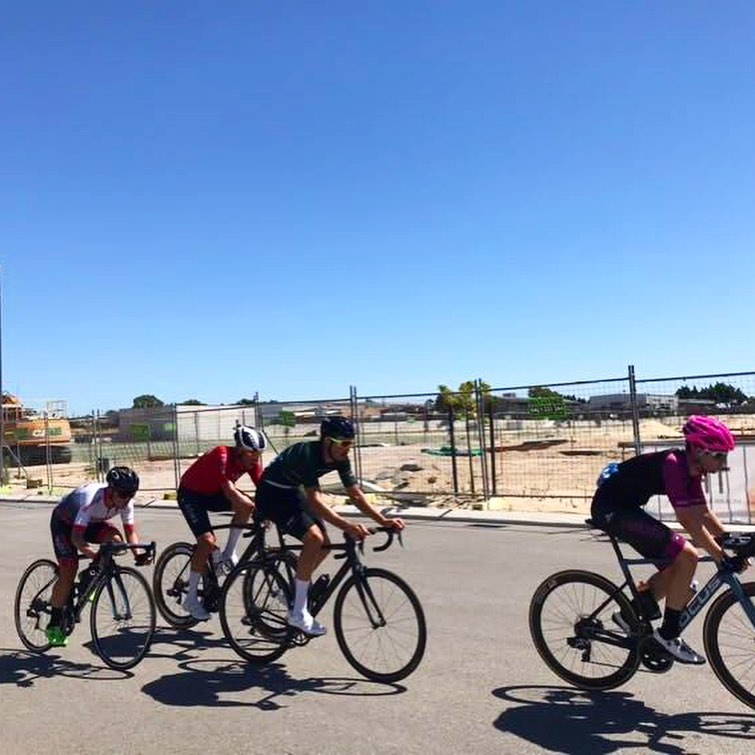
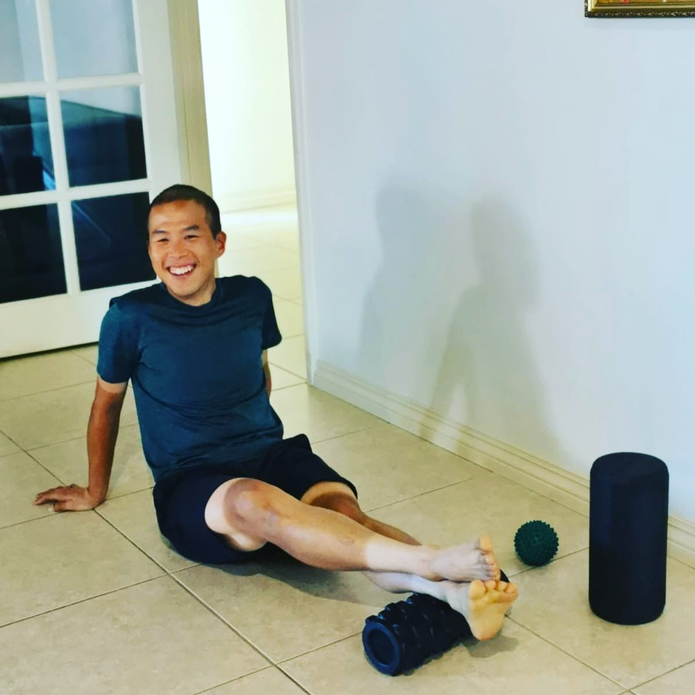
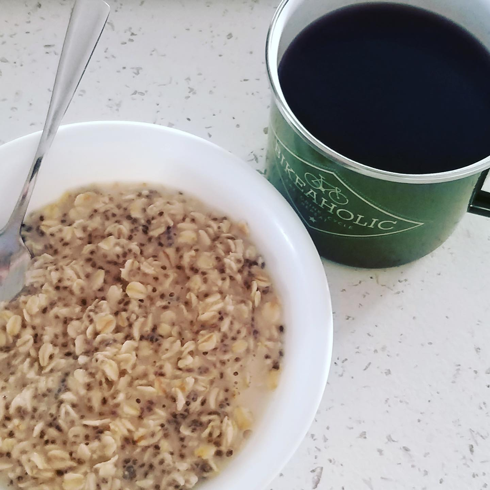
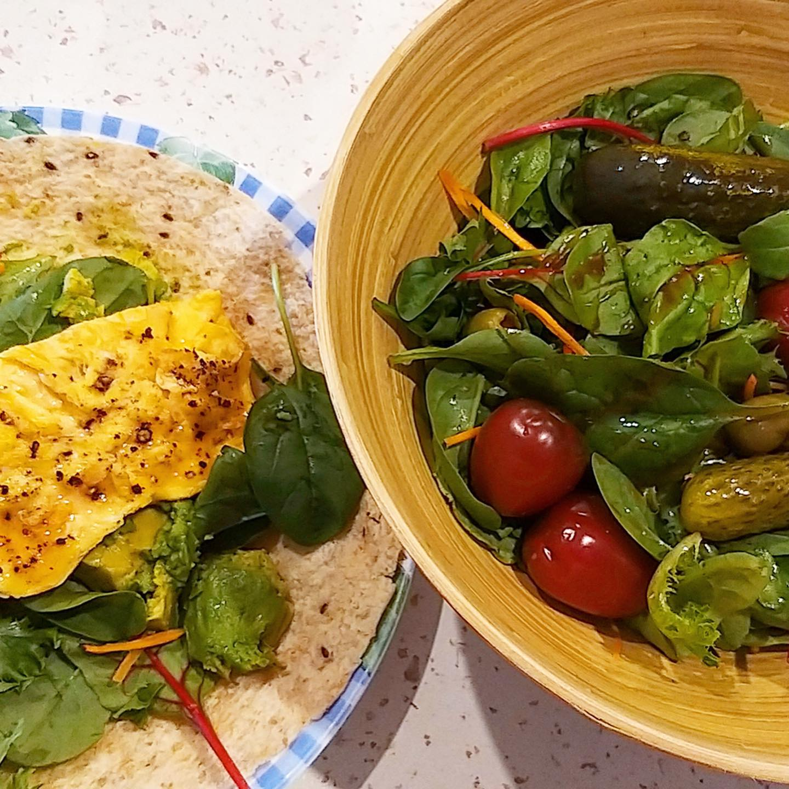
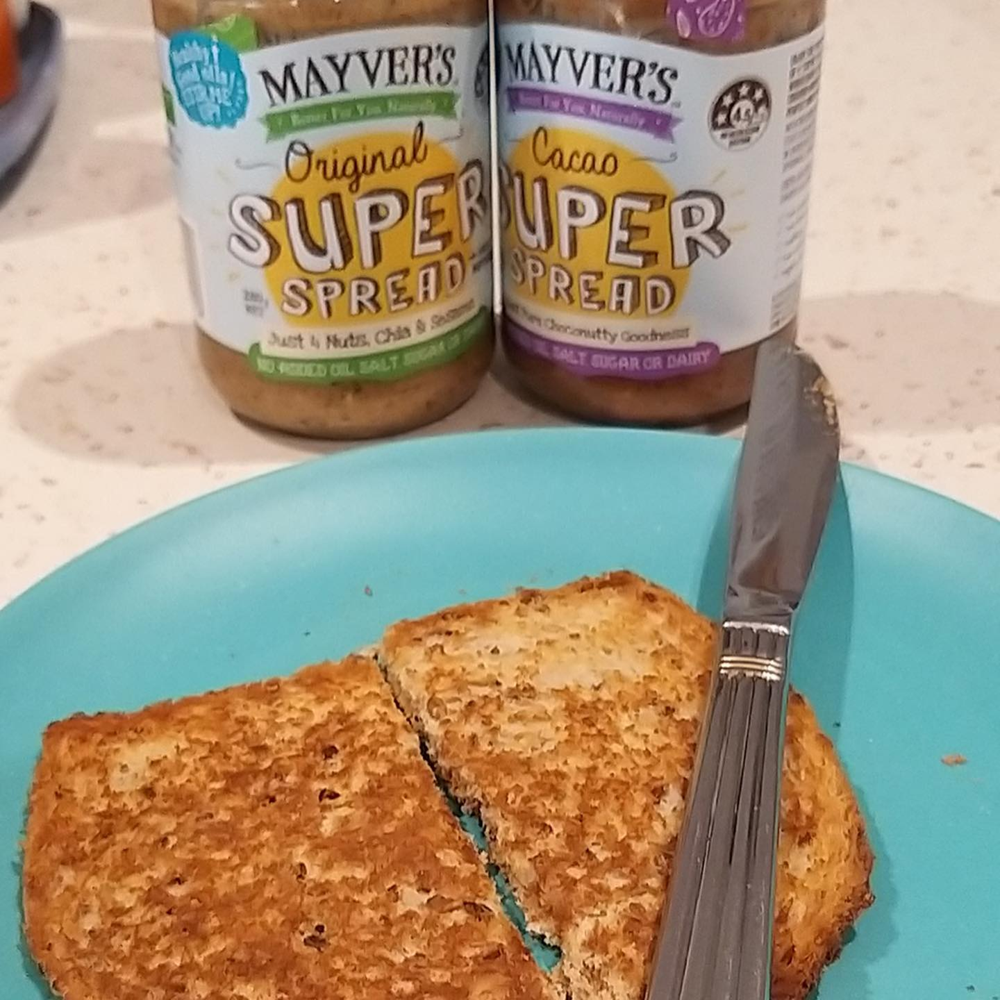
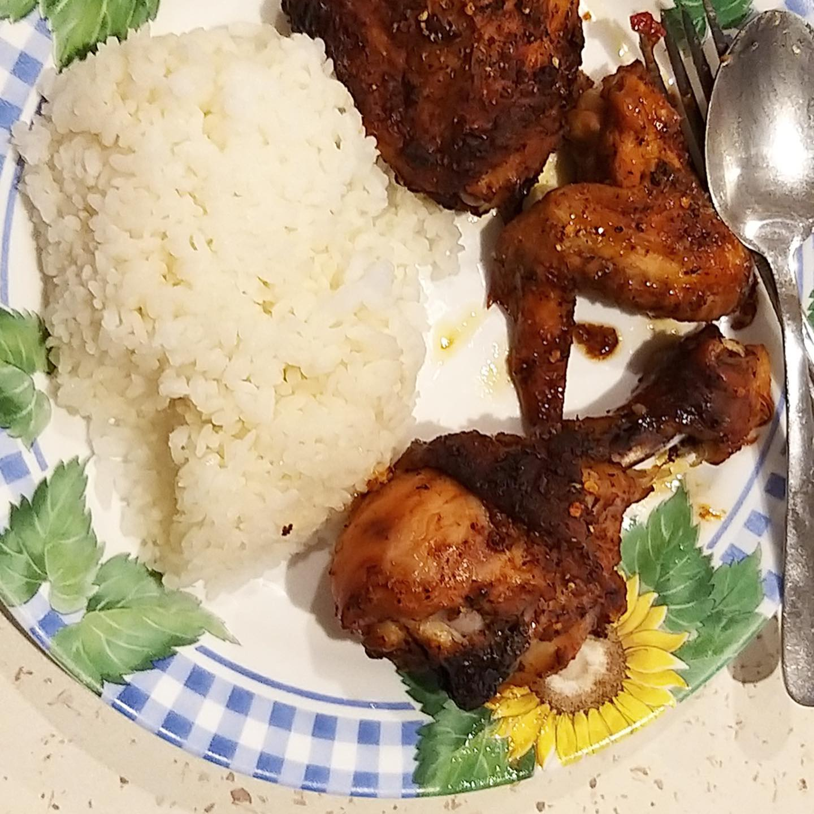
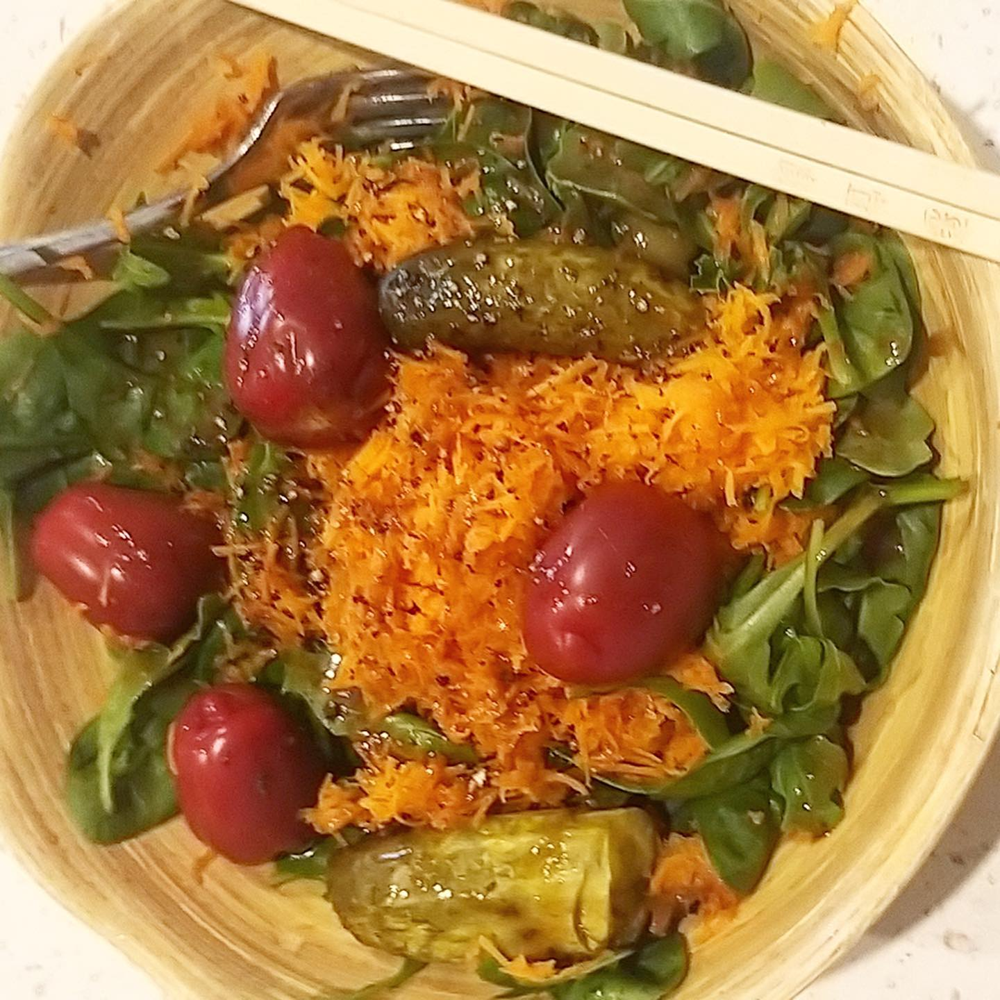

Hey guys! Here’s the last post of my #AthleteTakeover of @foodbuddy account! 😎 I hope y'all enjoyed my training journey in the camp and your weekend!☀️ One of the best things about Aussie summer is the criterium racing held in various parts of Perth 🚴🏼♂️👌 Every Sunday, I would get to race the criteriums (avg speed about 43km/h) for about an hour, the racing provides some intensity on top of the endurance block that I am doing in Perth. In these races, I get to hone my racecraft, practice my race rituals and tactics. After every race, I would look back and reflect on what can I improve and do better during the race. I feel this is very important for my own development as a rider. During track races, my coach will also be able to give me feedback immediately after the races and I would be able to apply those improvements in the upcoming races.😄 Today i started my day with the same breakfast my favourite rolled oats, chia seeds, honey, and soy milk. I had a slice of wholemeal bread with some nut butters as well. Super yummy and full of energy to race! Today's race was windy 💨 and fast with a slight uphill (about 2 to 3%) finish, made a few mistakes during the race meant that I finished with the bunch. A slow ride to the race and back home helped to add more volume to my training. Lunch after the race was lower in carbohydrates. I periodize my carbohydrates during some of my meals as tomorrow I will have an easy day. So, a big bowl of fresh salad, some gherkins, cherry tomatoes and sprinkled in some soy miso dressing. I would have the wholemeal wrap with avocado and omelette. Midday I used the foam roller and trigger ball to release the tension and knots in my legs and back. Cyclists tend to get tight in these areas. 🚴♂️ Finally to end of the day with dinner, a huge bowl of salad with grated carrots, olives, and tomatoes as an entree. We are doing a barbeque today, so we had barbequed chicken with rice. Thank you, @foodbuddy and everyone for tuning in!😘 I hope you guys enjoyed this feature and I look forward to seeing everyone out on the roads soon. 😊 __ #cycling #cyclinglife #sgathletics #singaporecyclingfederation #pinarello #perth #singapore
2020-01-19 23:34:21
Back to main page